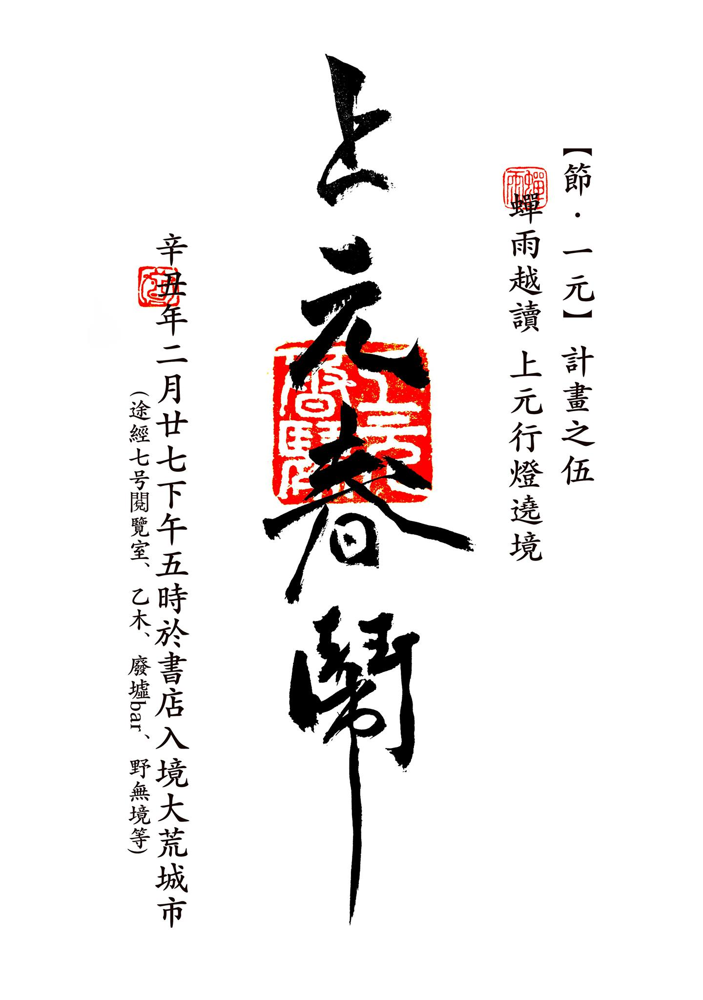
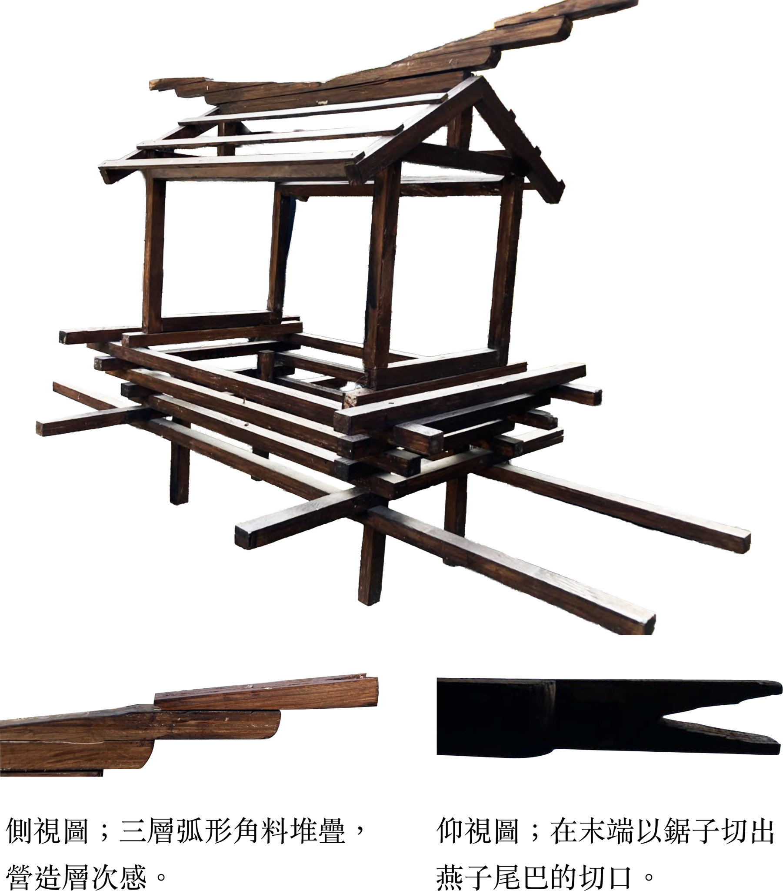
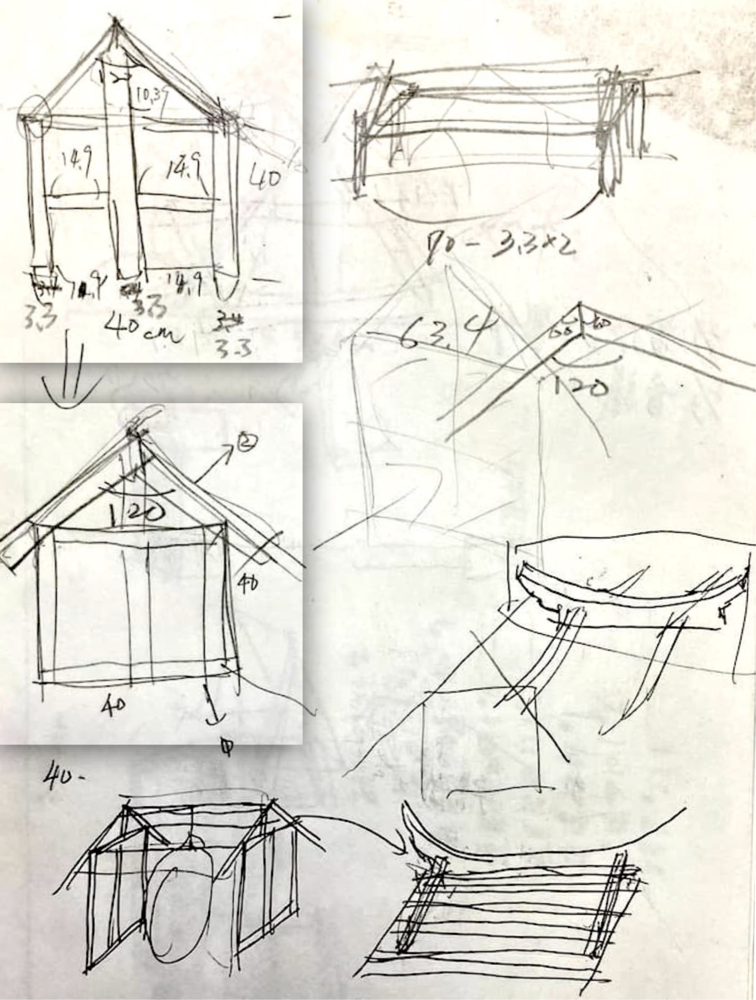
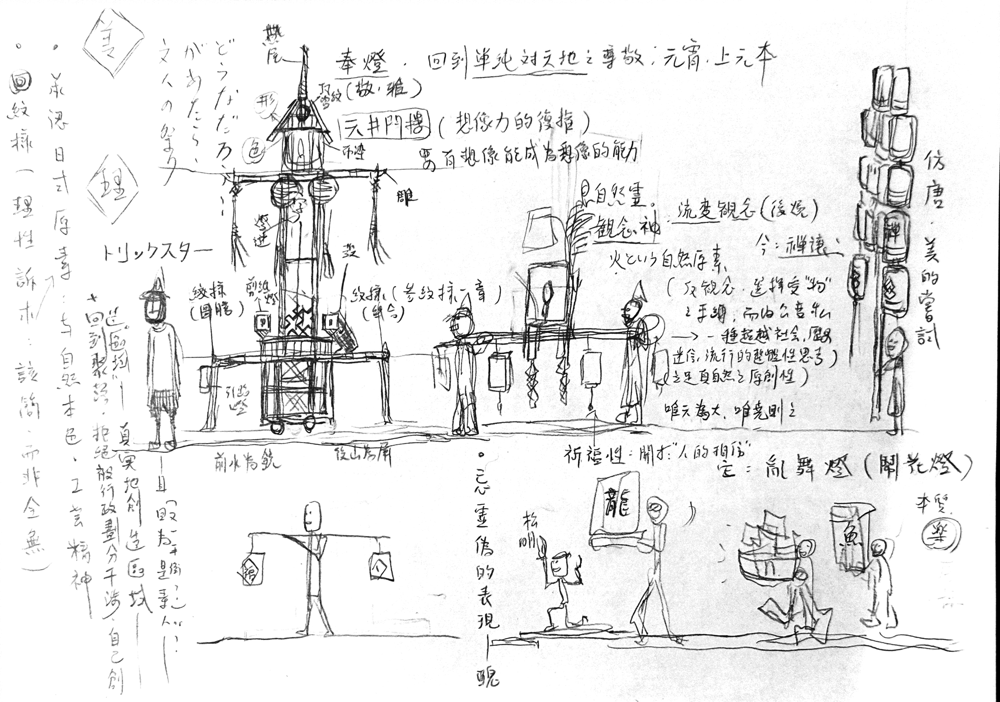
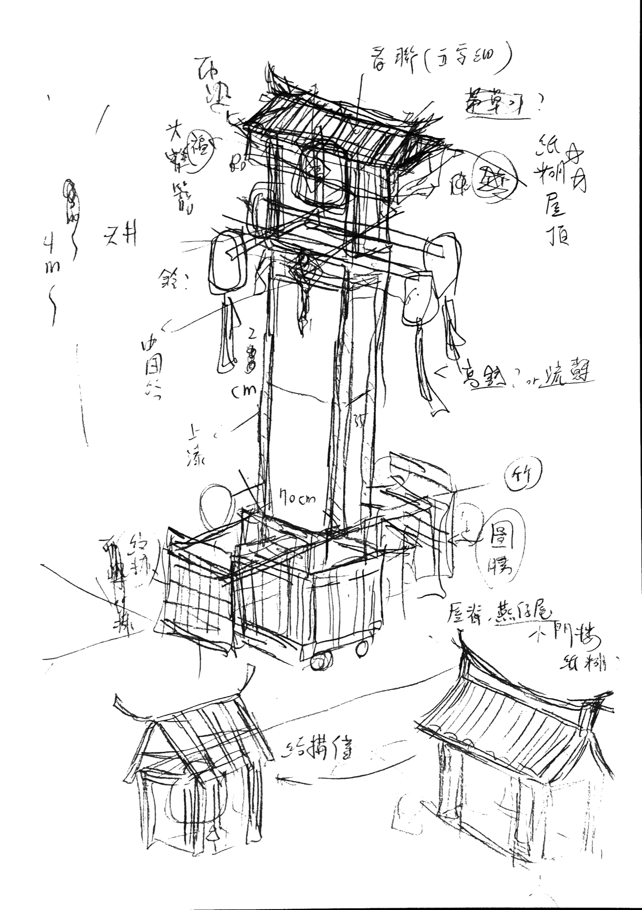
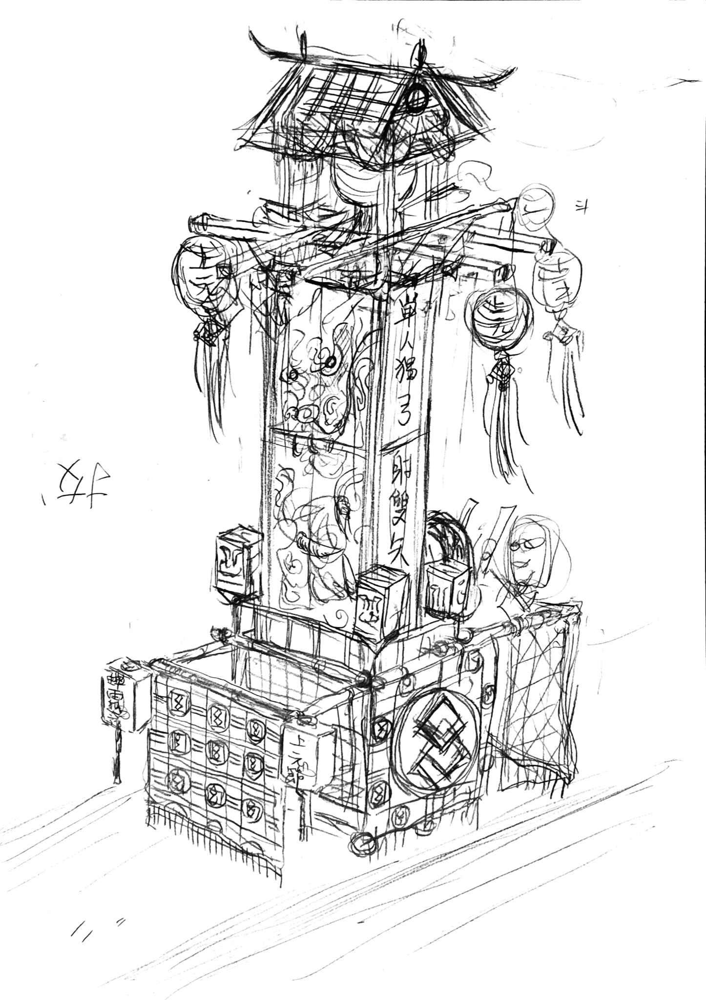
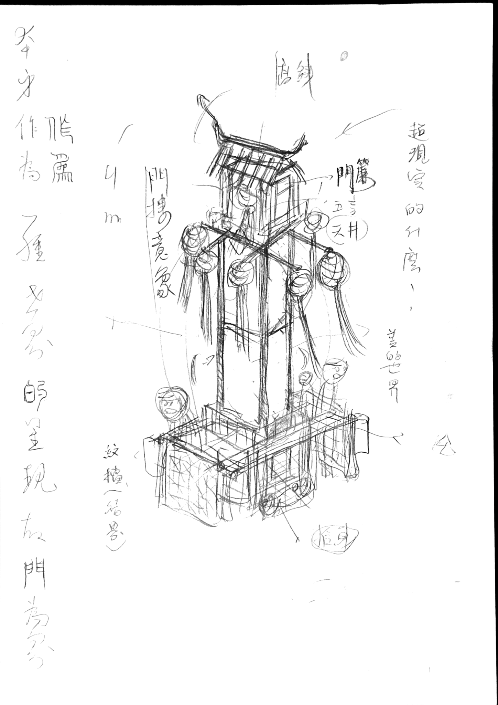
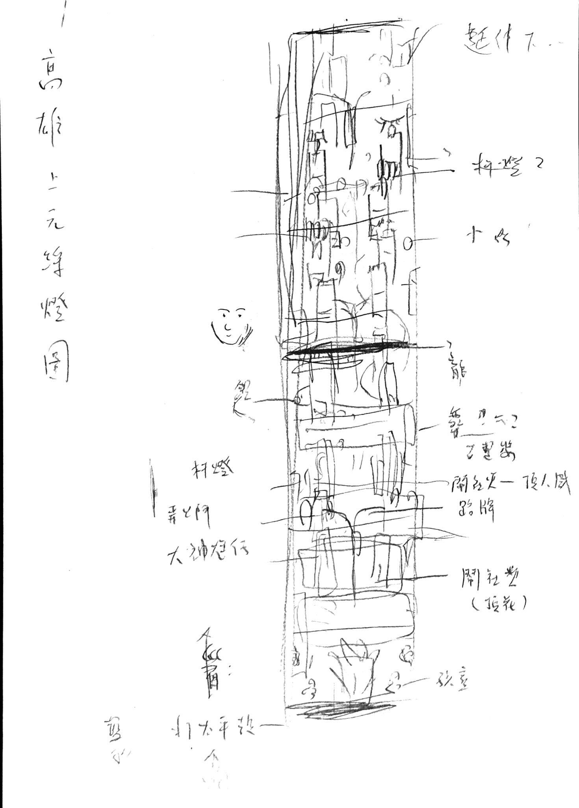

OVERVIEW
活動概覽

2021辛丑上元，由高雄「蟬雨越讀」獨立書店主辦，是莊逸軒發起的「《節・一元》年度計畫」的其中一環。
THEME
節・一元
「節‧一元」文化實驗計畫，是蟬雨越讀第一年進行的活動，內容主要觸及藝術、哲學、心理、民俗、歷史等範疇，目的是藉由書店作為一個實踐知識的場域，讓人知道知識可以變成行動、可以「超越」。並藉由時間（節）的形式，重新界定、認識、創造自己與城市的相處方式。具體而言，我們步行遶境於城市，穿梭巷又與沿著海濱，試著跟居民互動、傳遞想法，藉由種種儀式、民俗文化，互相交換、感受生命的況味並思索人生難題。這本小冊子作為一個簡短回顧，同時提供了簡單的活動介紹，希望更多⼈可以了解這⼀年的故事，提供更多思考碰撞的機會。
書店第一年計畫：節・一元 ──逸軒
一年前，我帶著學生做了一場學習的實驗活動，說要以「遶境」的形式，從書店走到旗津，模擬廟會行列，感受踏足城市土地的味道。當時我握著掛上旗幟的長竿，引領隊伍，穿越了中央公園，走上了高雄橋，在駁二舉行過火儀式，偶遇雷陣雨，抵達沙岸時已一身狼狽。然而，途中聽著學生敲著不諧音律的鼓與鑼，看他們扛著沒有神明的自製神轎，旁觀者看來雖然不成體統，我卻找到了一種自由。
在城市長大，總有一種觀念：一個人是自由。所有和他人的過度瓜葛都是一種累贅，尤其像是廟會團體，那種太強調地緣、信仰的連結，對當代而言毋寧是一種落後的表現。如此活在一種偏見中，直到意識到一種像寒流襲捲的虛無，才停止對個人主義的無限上綱。為了找尋化解的方法，參加了幾場遶境，才明白了人與人強烈鍵結下活生生的感動，便也想加入團體中，想在汗水與肩酸後共享服務神明的榮光。然而觀賞再多場遶境，我畢竟不屬於那裡，我沒有那樣的出生，沒有可被認同的背景，我是個徹徹底底的城市孩子，習慣科學而無法不懷疑神明，日常是超商和網路，假日則是遠遊和商場。城市只是一個砲台，永遠用來發射，從來沒教導駐守與留戀。
所以感到一種自由，是明白了人有創造命運外經驗的可能，提著長竿的我，作為行列的前頭，學會了想像另一種生存狀態，我開始相信祭典的目的不是為了服務神明，而在於奠定人與人連結的方式，儘管高度資本社會下充滿疏離，藏在人的深處的某種溫情，並不會因此消滅。
活動結束後，書店正好開幕，被交代要籌辦活動以豐富書店的內容，想了些關於藝術、文學的題目，但耳根子卻還自動播放著遶境時的鑼鼓喧天，使我不斷在心裏默問：自己所感受到的，只是一次性的幻想，還是可守護的真實？
翻起了前幾年寫的小說《林泉街人》，那是一個關於主角為了尋根而嘗試重新過節的故事。但寫的其實是自己對文化的糾結與迷惘。突然想著，書店既然作為一個實際存在的場所，而小說莫大的浪漫不正是將其中的理念、幻想、追求化為現實？帶著想實驗文字的衝動，對照起當時月份，即將中秋，很快地下了一個決定：與書店同步出發，要開始過節了！
雖然說是「過節」，但立足點卻不在傳統的文獻，而在書店的藏書，其中又以當代思潮為首要。方法上雖自認為是結構主義式的，但缺乏認證所以可能只是種思考遊戲，至少確定跟既定觀念上的「過節」有很大的落差。比方中秋以月亮循環的意象，討論古今中外貫穿的詩情象徵，並連結了人內在的自然性，表現人與月亮的對話關係……。那時候做的轎子命名為月轎，塗上紅漆，放入婚儀的意象，在午夜零時跟幾個志同道合的夥伴，抬著月巫（某夥伴的妹妹），走過技擊館，直至中正公園，大夥便在草地上，配合著簡單舞步，喚醒了別於烤肉歡笑，一種莊嚴而寧靜的賞月方式，如今回想，那確實成為此生之中，對月亮最美麗的記憶，而這竟然是可能創造的。
後來又經過了重九、下元、冬至，思考了關於極限、命運等問題。在上元的時候有一次突破，推著三台高達四公尺的燈車，走至鹽埕，途中拜訪七号閱覽室、乙木、廢墟Bar、野無境等高雄文藝相關場所，抱持著一種串連的心態，希望文藝可以互相來往，以創造出屬於美、生命、熱情的城市風景，雖然高雄常被認為是文化沙漠，但所謂的絲路不也是從沙漠中走出來的？帶著天真而樂觀的心情，也確實吸引了比往常還要多的人參與，行列第一次加入了來自不同地方的人，形成了更加豐富的群體，有人吹著嗩吶，有人彈著三弦唱歌，有人賣力地獨舞，有人向路人大喊上元節快樂。即使還不成氣候，卻看到了夢想的藍圖：在中正二路大道上，人們推著精緻奪目的燈車，跳舞與唱歌，延續過年的喜悅，卻不僅於家族，而能同樂於街坊鄰居，以自己的手點亮整條街區。讓未來出生的孩子，即使離家在遠，也多一個年年驕傲故鄉而願意歸來的理由。
又過了清明、端午、七夕、盂蘭，探討了祖先、避邪、星空、死亡等哲思。「節‧一元」終於劃下句點，然而很難說是順利結束，畢竟一路上遇到太多預料外的難題，以致本末倒置，將處理書店的精力全部拿來處理活動，使書店經營慘澹，且持續無聞（這也是為什麼後來決定「再次開幕」的理由），同時也就成為了「節．一元」計畫最大的敗筆：節慶本身以「人的參與」為基礎，但偏偏最缺乏的就是人！
這一年，很多理念想要傳遞，是為了回到書店作為知識實踐場域的根本，但確實操之過急，總是按耐不住心中那想要脫韁的馬，常常奔到一個地方後，才驚覺空山，雖有幽蘭但渺無人煙。計畫結束後的三個月間，持續反省與再思量開始的問題：自己所感受到的，只是一次性的幻想，還是可守護的真實？
過程讓答案積累，成為了一匹裝上鞍的馬，嘶吼著要引領至更遠的地方。在此階段得到的結論是要再作一次上元，為此寫下了這篇不知道算不算回顧的文，不止希望更多人可以了解，更希望能願意參與、協助——即使只是一個單純想過節的願望，一個對未來想像風景的渴求，或僅僅一次想雪恥的任性。
不論如何，最後還是說一聲：「節」是值得守護的真實。因為「節」是城市的反省、是虛無的回聲、是人與人走向純粹的途徑。而「節」需要人步伐的參與、需要人眼神的見證、需要人聲音的傳遞。我們都應該嘗試如何活得更美更真實。
ARTWORK
創作內容









DISCOURSE
創作論述
當我們試圖祝福一個人的時候，其實是在相信自己也能成為讓對方飽滿的一份力量，那是一種信念，是相信生命還能在儘管空腹的時候也能因為想起些什麼而滿足地微笑的信念。如此也會想起花的祝福，如蔣勳老師曾說道：「在現實生活裡，花看起來如此脆弱，沒有力量，但是有沒有可能，花會成為救贖一個社會的重要力量？」
← 點選左側文章標題
COLLABORATORS
共同創作者視角
← 點選左側創作者姓名
AFTERWORD